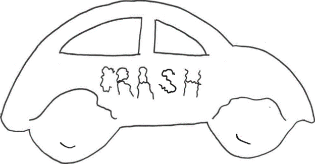
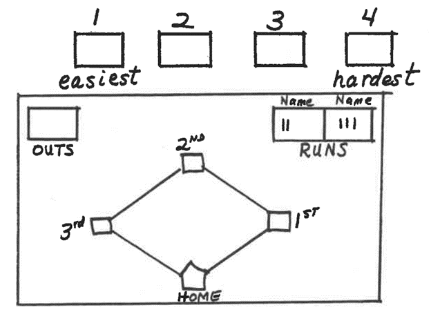
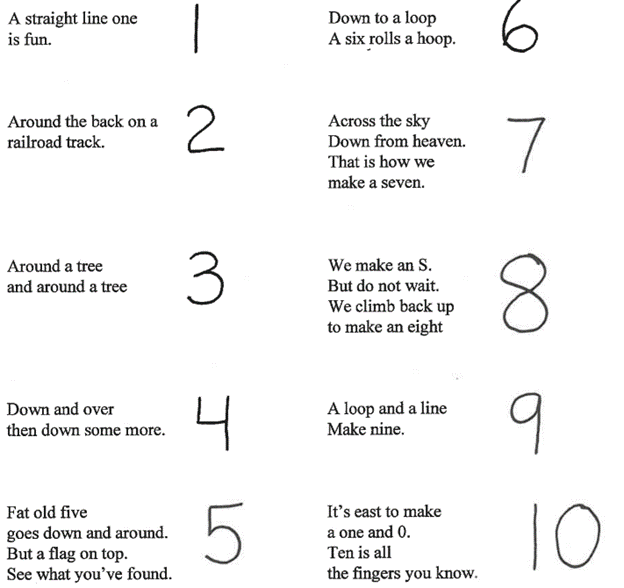
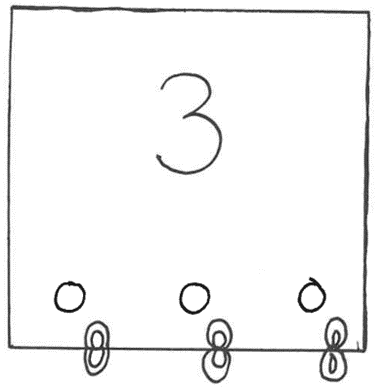
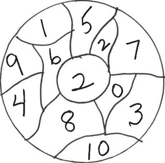
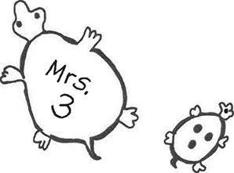
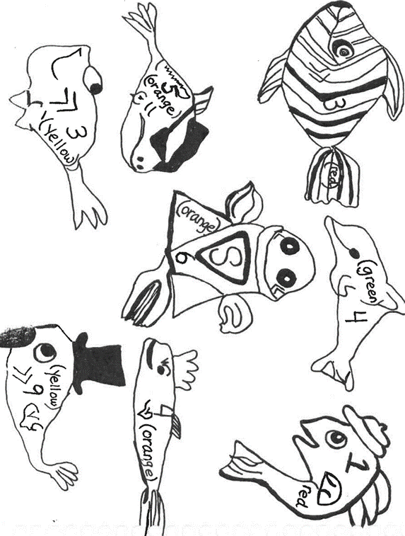
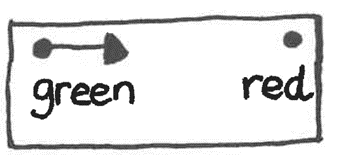

N 1: RACKO
Purpose:
Sequencing
Materials:
Number cards
Procedure:
Shuffle numbers so they are not in order. Place the pile of cards in the center of the table. Each player
draws one card at a time (for a total of 5 cards) and places it in front of themself in a vertical row
(like a ladder) in their numerical order.
The game begins by taking the next card from the center pile and deciding where on the ladder it fits
most appropriately. They then insert the card into its proper place in the ladder and discard the number
they removed. The next player may take the discarded number or may draw from the center pile. Play
continues until one player has all their numbers in order. (Need not be adjacent.)
Variation:
Begin with sequencing 3 numbers and use numbers 1-5 in the draw pile. Add numbers as the child's
awareness grows.
N 2: CARS
Purpose:
To review beginning sounds or numbers or color words.
Materials:
Cut out 30 cars. Write letters or numbers on 24 of the cars and write "CRASH" on six of the cars. Draw
rumpled fenders on the "CRASH" cars. Laminate the cards for durability.
Procedure:
All the cards are placed with letters or numbers and "CRASH" face down. First player begins by choosing a
car and reading the letter or number. If read correctly, they are entitled to choose another car. They
continue to choose cars until they either miss a letter or they choose a "CRASH" car. Then the next
player takes a turn. The player with the most cars is the winner.

N 3: ON YOUR BACK DRILL (proceed with caution if choosing this game)
Purpose:
To reinforce numbers.
Materials:
List of numbers that need reinforcing, paper, and pencil
Procedure:
Have the child sit with their back to you. Using the selected number needing reinforcing, draw the number
on their back writing with your index finger. Then have the child write the letter or number you have
drawn on a piece of paper. Take turns and let them write on your back.
N 4: BASEBALL
Purpose:
For quicker recall of color or number words. Good for reviewing sight words.
Materials:
Baseball diamonds drawn on manila folder, markers, words, and dice.
Procedure:
Establish the number of outs to be played in the game. (Could pick 5 to 10 outs depending on the amount
of time.) Player throws the dice. If 1, 2, 3, or 4 is thrown, the player reads a word (flashed to them
by the tutor) from the pile designated 1, 2, 3, or 4 (of word cards). They then move their marker the
same number of bases. (The word can be flashed quickly at first. If the player does not know the word
flashed quickly, it may be flashed slower. If they still do not know it, the tutor may help them. When a
word is read, the player may move the number of bases indicated.)
If a player shakes a 5 or 6 on a dice, it is counted as an OUT and one OUT mark is placed on the
scoreboard. Game is over when the number of outs stated in the beginning is reached. Every time a player
passes home base, a run is scored for that player. The winner is the player who has the most runs scored
before the last out is made.

N 5: TEEN SOLITAIRE
Purpose:
Reinforce recognition of numbers 11-19; sequencing.
Materials:
4 laminated cards for each of the numbers 11-19.
Procedure:
Deal in a line eight stacks of four cards each, all face down. These stacks will represent the numbers
12-19. Place four cards above the line. The object of the game is to have all the cards lined up in
their correct order, face up 12-19, before all four 11 s are revealed.
Beginning with the top pile, turn over a card and put it face up at the bottom of the correct pile. Then
take a card from that pile and place it in its correct place and so on. When there are no more cards
left in a pile, take a card from the top and continue, until the stacks are all completed, 12-19, or all
the 11s are revealed.
Example: If the first card drawn from the top is "12", put it at the bottom of the first stack of cards,
and then take a card from the "12s" pile and put that card where it belongs.
If the game works out, all eight piles of cards numbered 12-19 will have been uncovered before all the
11s are revealed. If the 11s are revealed first, the game is lost.
If this is too frustrating/complicated for your student, deal nine stacks of four cards and if a pile
runs out, just take from the next available pile.
N 6: BANG!
Purpose:
To reinforce numbers and number words.
Materials:
Coffee can or box decorated with the word "BANG" on the outside of the can or box. Number and number word
cards. Three or four cards that say "BANG". All cards should be the same size and color.
Procedure:
Have the student say the number or number word. If they are correct, they may keep the card. Take turns
to see who can get the most cards. When a person draws the "BANG" card, they must put all their cards
back in the can.
N 7: RACE TRACK
Purpose:
To practice letters, numbers, or color words.
Materials:
3" x 2 1/2" size cards (3" x 5" index cards cut in half) with letters, numbers or color words written on
them.
2 matchbox type cars and one dice.
Procedure:
Lay the cards on the floor to form a racetrack. Place both cars at the beginning. The first player rolls
the die and moves their car along as many cards as the die indicates. They must correctly say the
letter, number, or color word they land on in order to stay there. Players alternate turns. The first
person to reach the end wins.
N 8: LOTTO
Purpose:
To practice number recognition.
Materials:
Double set of number cards (1-12)
Procedure:
Divide one set of cards between the two players. Each player places their cards face up in 2 rows in
front of them. This becomes their "Lotto Card".
Place the other identical set of cards spread out face down in front of the players. The first player
draws a card, reads it aloud and looks to see if they have that number on their "Lotto Card". If they
do, they cover the number with that card and then draw another card and proceed the same way. If they
don't have the number, they must give the card to the other player to place face down over the number on
their "Lotto Card". Then the other player does the drawing until they can't place a number on their
"Lotto Card". The first player to cover all the numbers on their "Lotto Card" wins.
N 9: NUMBER RHYMES
Purpose:
To practice the recognition of numbers.
Materials:
Any medium on which the child can draw numbers.
Procedure:
Have the child make numbers as the two of you say the verse.

N 10: CALENDAR MATCH-UP
Purpose:
To practice number recognition 1 - 31; (sequencing; reasoning; small muscle.)
Materials:
Two calendar pages of months with 31 days each.
Procedure:
Cut one page into 31 numbered squares to be matched onto the other page. Have the child verbalize the
number and estimate where it will go. "Does the number come at the beginning, middle, or end of the
month?"
Variation:
Use a shorter month to illustrate variation in our year.
N 11: LINE FIND
Purpose:
To practice the recognition of numbers (left to right directionality).
Materials:
Deck of cards, face cards removed.
Procedure:
Lay out four rows of cards, ten in each row. Have the child read the first number, then find the rest of
the numbers like it in each row. Be sure they track from left to right.
When all four numbers of each numeral are found, the game is over.
May have the child put the cards in numerical order.
N 12: FIND YOUR NUMBER
Purpose:
To practice recognition of numbers.
Materials:
Deck of cards 1 - 6 and a die.
Procedure:
One deck of five cards to each player. The first player throws their single die. They then find the card
with that numeral in their hand and play it on the table. They refill their hand from a draw pile and
the other player throws their die for the next number.
When the draw pile is completed, finish cards in hand. The first player to play all their cards wins.
This game could be sophisticated enough to do recognition of numbers 1 - 10 using two dice to shake the
number. This time the two dice are added together to make the number that must be found in the hand.
N 13: WAR
Purpose:
To practice recognition of numbers (greater than and less than concept.)
Materials:
Deck of cards, face cards removed.
Procedure:
Give each player half of the deck. Each stack their cards in a pile in front of them. Each player turns
over the top card, and the player with the highest number takes both cards, adding them to the bottom of
their pile. If both cards are the same, "War" is declared. Each player then places one card face down
and a second card face up. The higher of the face up cards takes all the cards.
The object is to win all the cards.
N 14: PASHA-PASHA
Purpose:
To reinforce number recognition (visual discrimination).
Materials:
Deck of cards.
Procedure:
Give each player half of the deck. Each places their cards in a pile in front of them, face down. Each
player turns over one card. When both players simultaneously turn over cards of the same suit, the
player with the highest-ranking card takes all the cards in their opponents face up pile.
Play continues as in WAR.
N 15: QUEEN OF SPADES
Purpose:
To practice recognition of numbers (letter, words, vowels, and blends).
Materials:
Deck of cards (Beginners, use Ace - 5 and Queen of Spades. As the child becomes more proficient, add
cards 6 - 10).
Procedure:
Deal out all the cards to players. Players lay down any pairs in front of them. The first player draws a
card from the player next to them. If they can use this card to make a pair with a card in their hand,
they lay the pair down. If not, the card is inserted in their hand, and the next player draws. Play
continues until one player is left with the Queen of Spades.
N 16: CALENDAR TOSS
Purpose:
To reinforce number recognition; (greater-than, less-than).
Materials:
Make a large calendar out of tagboard for use on the floor; two small bean bags.
Procedure:
Each player takes a turn to toss their bean bag onto the calendar. They must be able to correctly read
the number their bean bag landed on to get a point. The person with the highest score after a certain
length of time wins.
Variation:
For greater-than, less than concept both players toss their bean bags and read the number they land on
but only the person with the larger number scores a point. High score wins.
N 17: CLIP THE NUMBER
Purpose:
To recognize numerals and numbers (to practice simple addition and subtraction); to practice fine motor
skills and number sequencing.)
Materials:
Tagboard squares (4 x 4) with numerals 0-10 printed on them. Under the numerals use a paper punch to
punch the number of holes each numeral represents so the child can "see" and "feel" each number. A
supply of paper clips.
Procedure:
Ask the child to say the numeral, feel the number of holes and clip enough paper clips on the card to
correspond with the numeral on the card. The cards could also be used for simple addition. Or ask the
child to put the cards in sequence.

N 18: NUMBER OR LETTER BALL
Purpose:
To practice number recognition, letter recognition or beginning sounds.
Materials:
A plain colored rubber ball 5" or 6" in diameter. Mark it into sections with a marking pen and put one
numeral in each section.
Procedure:
Throw or bounce the ball to the child. They catch it and must read the number their right thumb is
touching and bound the ball that many times.
Variations:
For beginning sounds, write the appropriate letters in the sections of the ball. The child must say a
word beginning with the sound their thumb touches.

N 19: GRID MATCH-UP
Purpose:
To reinforce number recognition, (alphabet recognition, match uppercase to lowercase).
Materials:
Divide a cardboard into 12 squares (3 across and 4 down).
Place the numbers 1 - 12 in the squares not in sequence.
Cut 14 small squares and write the numbers 1 - 12 on them and the word "free' on 2 of them.
Procedure:
Place the 2 free squares face-up on any numbers on the grid. Place the other squares face-up any place on
the grid (do not match numbers). You will have 2 small number squares left.
Begin play by lifting one "free" square exposing the number under it. Find the square that matches that
number and place it on the matching number. This should show a new number for which you will find a
matching number. Play continues until you use your extra numbers, at which point you will be stuck. Then
lift the other "free" square and continue playing until you are forced to use your second extra square.
This will be the end of the game. To win you will get all the numbers to match before being forced to
use your last square.
Variations:
Place letters of the alphabet written in lower case on the grid and upper case on the squares.
N 20: MUGGINS
Purpose:
To recognize numbers in sequence.
Materials:
Deck of cards, face cards removed.
Procedure:
Each player has one half of the cards and places one card face up in front of their "face down" pile.
The first player turns over the top card of their "face down" pile and tries to place this card that is
"the same as" or "one more than or one less than the face up card in either pile. They continue to
play until they cannot place their card, then they discard it on the bottom of their face down pile.
If an Ace is turned up it counts as a "one".
When a player's "face down" pile is exhausted, they are the winner.
N 21: GREATER THAN POPS
Purpose:
To reinforce the concept of greater than and less than.
(To practice addition and subtraction)
Materials:
30 popsicle sticks and 40 11/2" tagboard circles. 20 of the circles are to be marked with the numerals 1
- 20 and the other 20 are to be marked with the corresponding number of dots. Rubber cement a circle
with the numeral to the circle with the corresponding number of dots back-to-back with the popsicle
stick in the middle. One can in which to store the lollipops.
Procedure:
Insert all the lollipops in the can with the numbers down and unseen. Each person quickly picks one
lollipop. Have the child identify both numbers and the pop with the greatest number. (Have them flip the
pops over to the side with the dots if they have any trouble with the task.) The person with the
greatest value pop wins the match and takes both pops. Play continues until all the lollipops have been
drawn. The player with the most lollipops wins!

N 22: PING-PONG TOSS
Purpose:
To practice number recognition.
Materials:
A small shallow box (about 12" x 12" x 3"), a supply of paper or Styrofoam cups, 1 ping-pong ball.
Procedure:
Write the numbers from 0 - 9 at the bottom of the paper cups. You may have to use some numerals twice.
Place the cups in the box using as many as will fit. Put the box on the floor and mark a spot on the
floor for players to stand while throwing. The first player takes a turn to toss the ping-pong ball into
the cups. If they can identify the number, they get a point. The next player does the same. The winner
is the person that accumulates the most points.
Variation:
Write a letter, blend, digraph, or word in the bottom of each cup to practice letter, blend, digraph, or
word recognition.
N 23: TURTLE FAMILIES GAME
Purpose:
To practice number recognition.
Materials:
Construction paper and magic markers.
Draw 10 mother turtles on paper, marking each with a name (Mrs. 4, Mrs. 7, etc.) Cut out and laminate.
Draw baby turtles (at least 25 on another piece of paper. Put dots on the baby turtle backs {Ex. 3 dots
on babies belonging to Mrs. 3}).
Procedure:
The child pretends they are helping Mother Turtle find her babies (four for Mrs. 4, etc.)

N 24: FISH POND
Purpose:
To practice color recognition, number recognition and auditory memory.
Materials:
Many different colored fish cut out of construction paper.
Color words written on cards in one pile. Numbers written on cards in another pile.
Procedure:
Place fish down on a blue sheet of paper (the pond), and
suggest to the child that they go fishing. Child draws one color card and one number card. They may fish
for only that many of that color. Play continues until all the fish are gone. The winner is the person
who has caught the most fish.
Variation:
The game can be used for auditory memory - "Catch 3 blue fish and 2 yellow fish" etc.

N 25: DISAPPEARING NUMBERS
Purpose:
To practice number words.
Materials:
Chalkboard, small container of water.
Procedure:
The tutor moistens their finger with water and writes a number word on the board. Child moistens their
finger and writes the numeral before the word dries and disappears. If they do it correctly and in time,
they score a point. If not, the tutor scores a point. High score wins.
N 26: CLOCK SOLITAIRE
Purpose:
To practice number positions on a clock.
Materials
Deck of cards.
Procedure:
Deal in a circle twelve stacks of four cards each, all face down and another stack of four cards face
down in the center. The twelve stacks represent the figures on a clock, One, Two, Three--the Jack will
become 11; Queen, 12; and the Kings go in the center of the circle. The object is to have all the cards
of the clock in their correct places, face up, before the King pile is completed.
Beginning with the center pile, turn over the top card and put it face up at the bottom of its correct
pile.
Example: If it is a nine, put it face up under the position of nine on the clock. Then take the top card
of this pile (nine) and put it under the pile where it belongs. Continue until all the Kings have turned
up.
If the game works out, you will have uncovered all the twelve piles of cards before the four Kings in the
center. If four Kings turn up first, the game is lost.
N 27: CLOTHESPINS ACTIVITY
Purpose:
To develop left to right directionality (fine motor control, counting and color identification.)
Materials:
Cardboard 7" x 14", with green circle on left, red on right.
Procedure:
Have the child put the clothespins on top of the cardboard, working from left to right. Be sure they use
the same hand with which they write.
Have them count clothespins as they put them on and take them off. Ask how many red, yellow, etc.
The tutor may place clothespins in a color pattern and ask the child to repeat that pattern.

N Bin also includes:
1-50 Ten Frame Cards.
Write on, wipe off activity mats.
1-100 Puzzle match up cards.
Colored dinosaur tub - for counting/sorting/pattern/fine motor work.